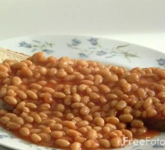

A British student classic and staple food - beans on toast is very simply toasted bread with baked beans. Very delicious!
- Bread - preferably white
- A tin of baked beans - preferably Heinz brand
- Butter
- Cheese - optional
- Put the beans in the microwave or cook on the hob according to the packet instructions.
- Once they are cooked remove from the heat and then toast your bread to your liking.
- Once the bread is toasted, butter it.
- Top the toasted bread with your beans.
- If you like, add cheese to melt on top.
Back to homepage